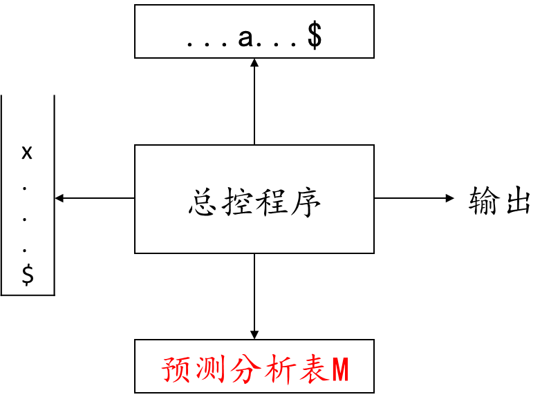
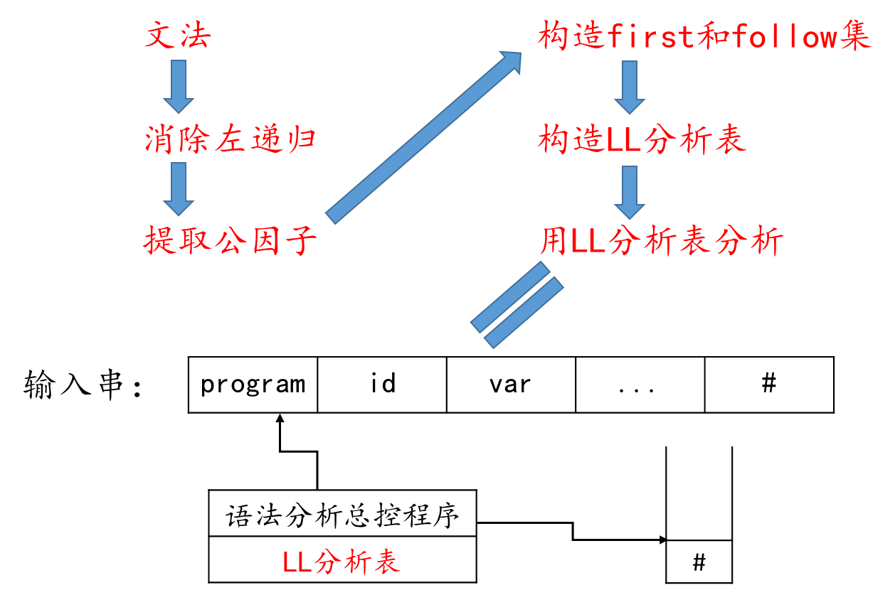
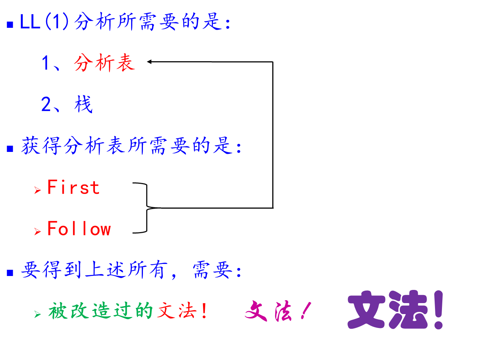

模型堆栈存放文法符号。分析开始时，栈底放一个“#”(或$)，然后，放进文法开始符号；同时，假定输入串之后也总有一个“#”，标志输入串结束；总控程序在任何时候都是按栈顶符号x和当前的输入符号a行事。 关键：构造文法G的分析表M[A，a]1、改造文法无左递归4.3.1消除左递归无左公因子4.3.2 消除回溯，提取因子若有含ε的产生式，则first和follow无公因子2、构造First 集；3、构造Follow集；4、构造分析表从文法到（LL）分析的流程总结